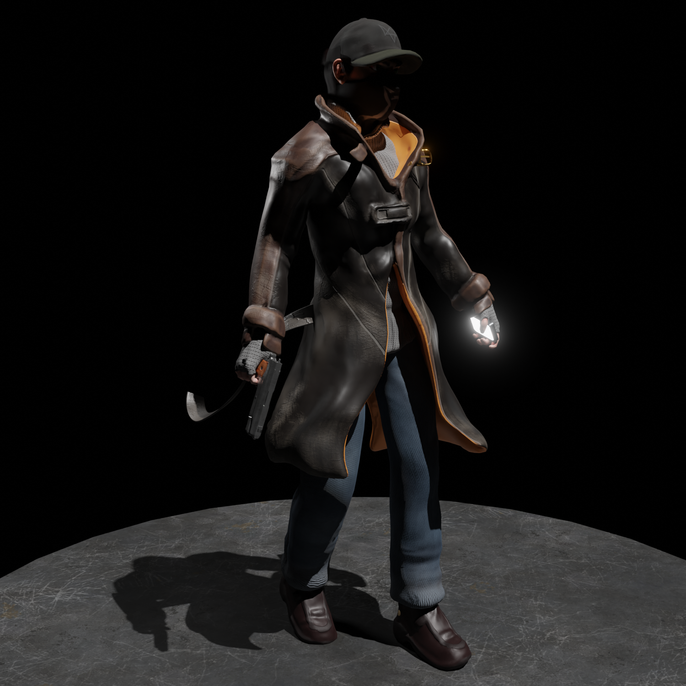
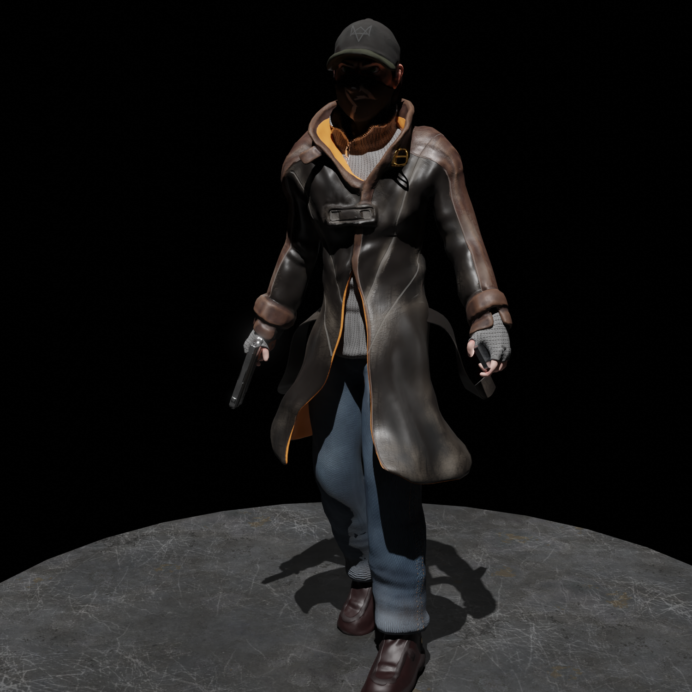
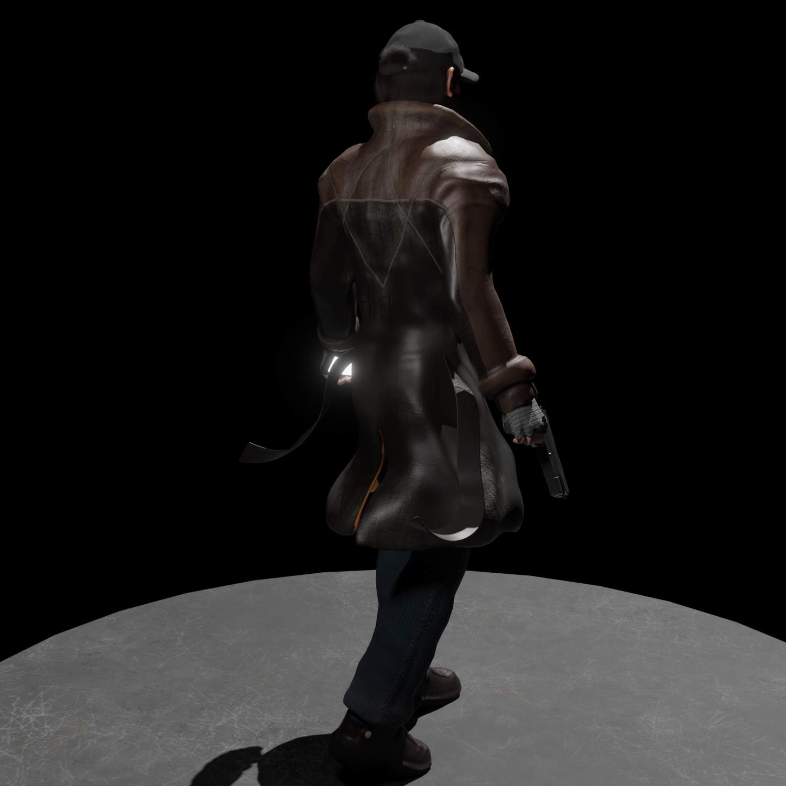
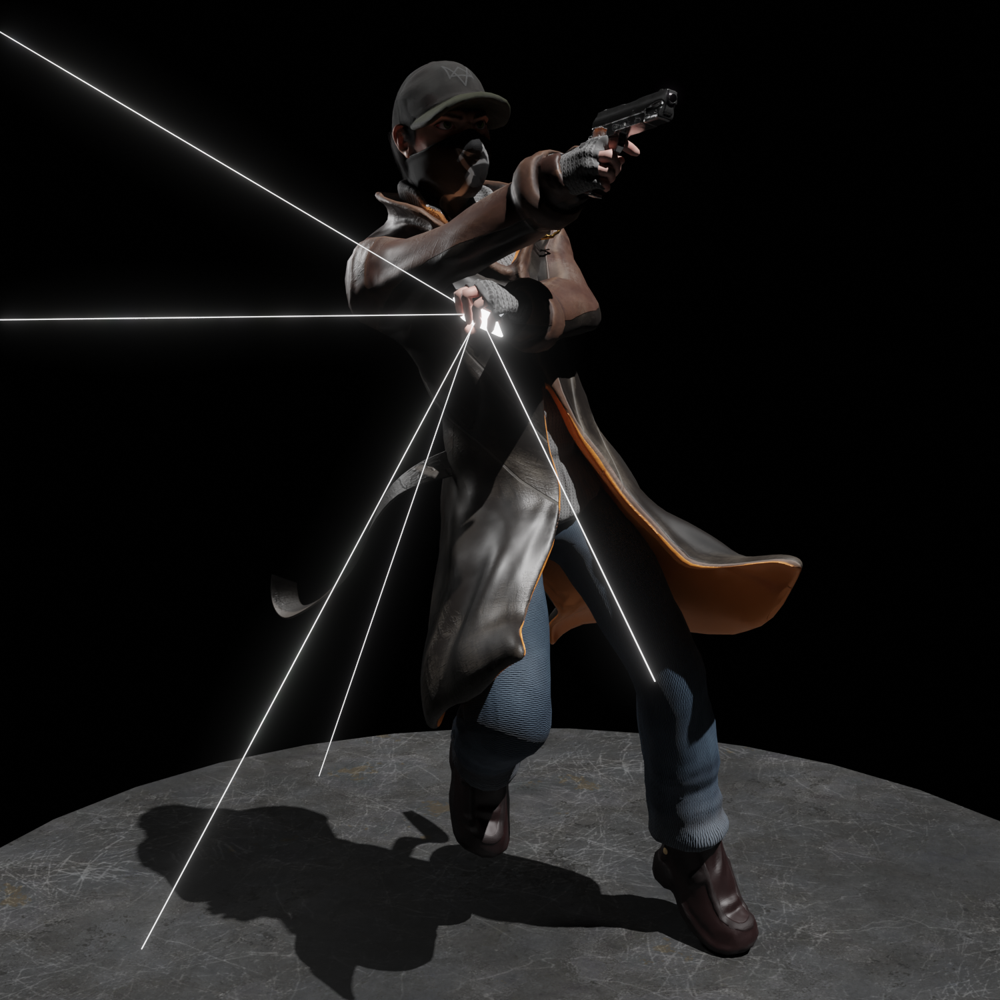
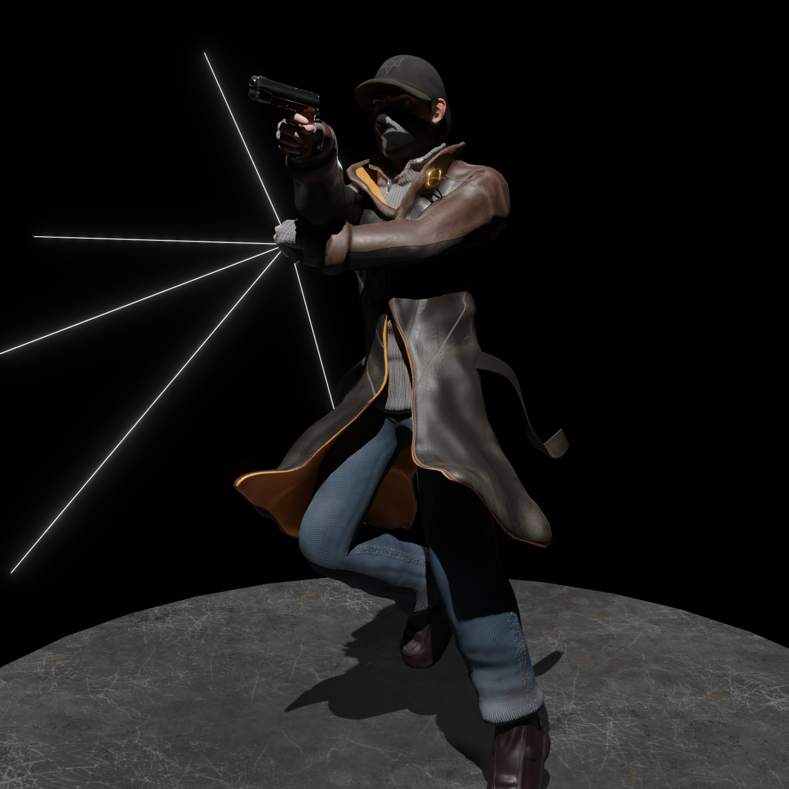
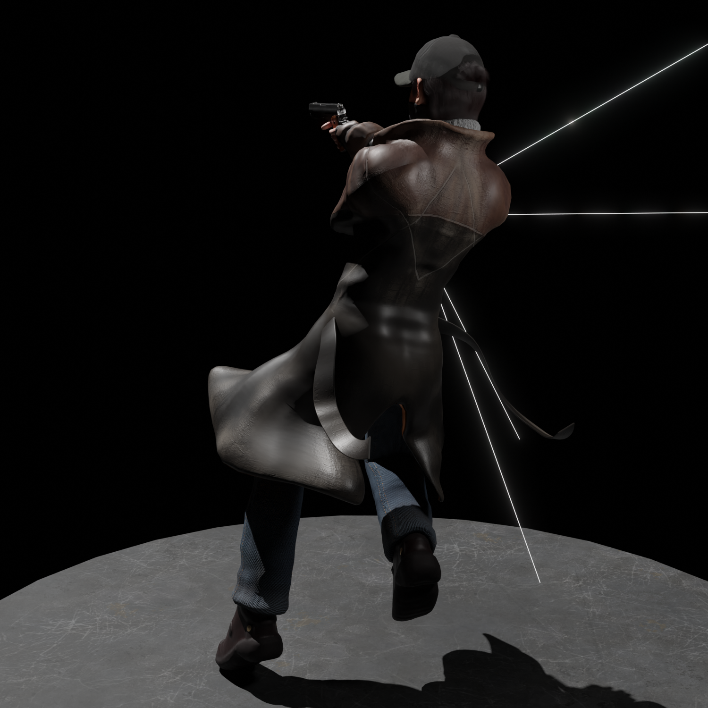
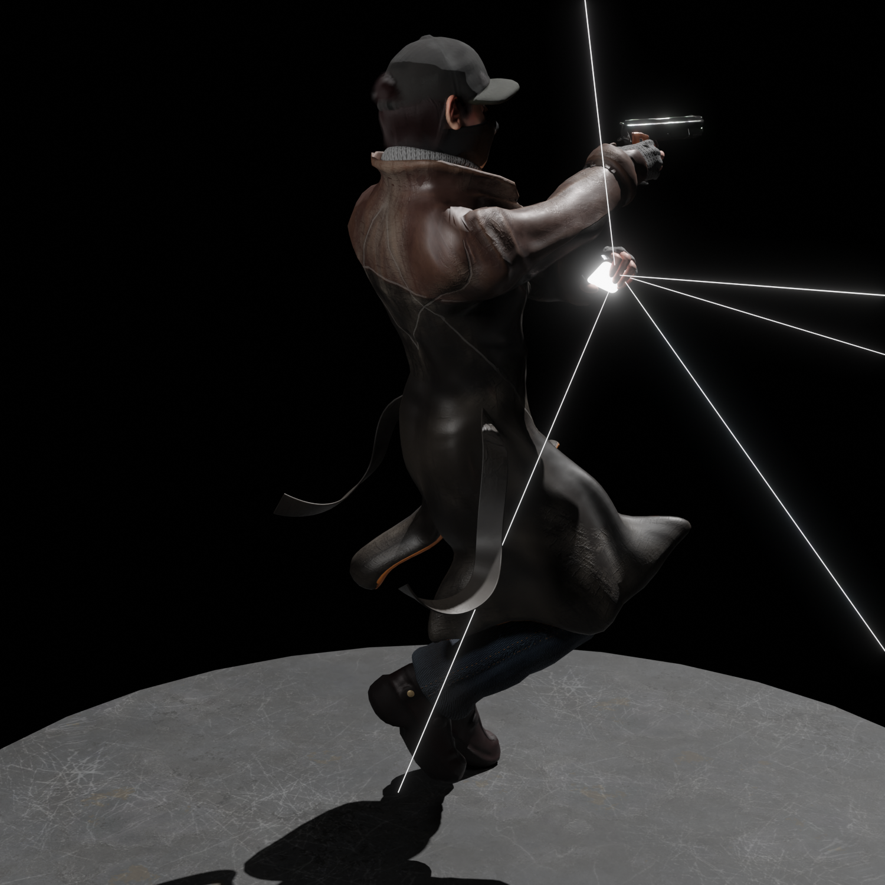
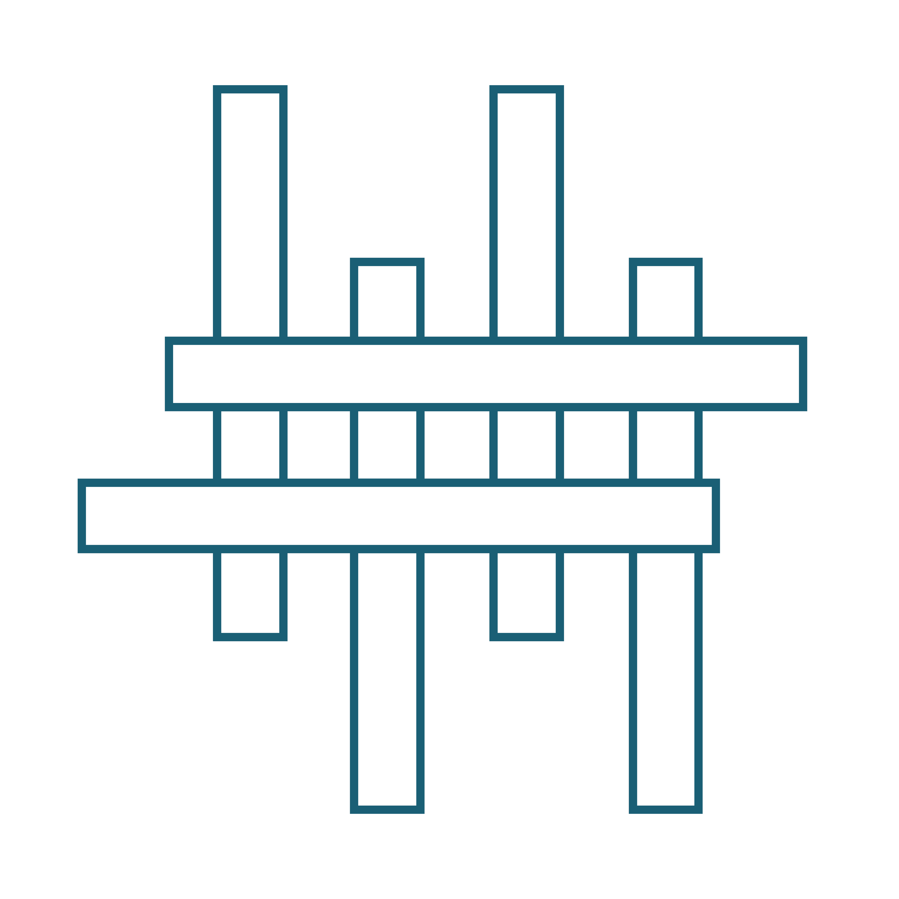

Aiden Pearce
Proyecto 3D personal inspirado en el videojuego Watch_Dogs
Aiden Pearce, protagonista de Watch_Dogs y el justiciero de Chicago. Está basado en el atuendo original que le dió Ubisoft. Mezcla de programas como Zbrush, Blender, Substance Painter. Renderizado en Blender Cycles
Mis Redes Sociales
Accede dando click a cualquier icono